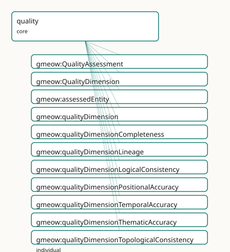

GMEOW Data Quality Module
- IRI: https://blackcatinformatics.ca/gmeow/slices/quality
- Tier: core
Group: core
What This Slice Covers
This slice owns 11 terms and contributes 10 mapping or projection rows. Use it when its terms match the native fact you want to preserve; use the linkage tables to see how those facts leave GMEOW for consumer vocabularies.
Dependencies
Consumers
- Data-quality claims (DQV/ISO 19157) over any slice's instance data; the coverage gates.
Local Map

Examples
Dataset Completeness
- Source:
slices/core/quality/examples/dataset-completeness.ttl - GMEOW terms:
gmeow:Dataset,gmeow:Observation,gmeow:Organization,gmeow:QualityAssessment,gmeow:ScalarQuantity,gmeow:assessedEntity,gmeow:hasUnit,gmeow:methodComputationalModel,gmeow:name,gmeow:observationMethod - External prefixes:
xsd
# SPDX-FileCopyrightText: 2026 Blackcat Informatics® Inc. <paudley@blackcatinformatics.ca>
# SPDX-License-Identifier: CC-BY-4.0
#
# Worked example: data quality IS a measurement . A gmeow:QualityAssessment
# is a gmeow:Observation subclass, so a completeness assessment carries the SAME
# bundle as any other measurement: gmeow:assessedEntity (the feature, a sub-
# property of observedFeature), a gmeow:qualityDimension naming WHICH quality, a
# gmeow:observationMethod, a gmeow:vantage (who assessed), and an entity-valued
# gmeow:ScalarQuantity result (98.5% with its unit) rather than a bare number.
# Quality is not a special boolean flag — it is an observation like temperature.
@prefix gmeow: <https://blackcatinformatics.ca/gmeow/> .
@prefix ex: <https://blackcatinformatics.ca/gmeow/examples/quality/> .
@prefix xsd: <http://www.w3.org/2001/XMLSchema#> .
ex:dataset a gmeow:Dataset ; gmeow:title "Coastal Bird Survey 2026"@en .
ex:auditor a gmeow:Organization ; gmeow:name "Data Quality Audit Ltd."@en .
# --- The assessment: which entity, which dimension, by what method, from whom.
ex:assessment a gmeow:QualityAssessment ;
gmeow:assessedEntity ex:dataset ;
gmeow:qualityDimension gmeow:qualityDimensionCompleteness ;
gmeow:observationMethod gmeow:methodComputationalModel ;
gmeow:vantage ex:auditor ;
gmeow:observationResult ex:completeness .
# --- The result: a scalar percentage, unit-bundled like any measurement.
ex:completeness a gmeow:ScalarQuantity ;
gmeow:quantityValue "98.5"^^xsd:decimal ;
gmeow:hasUnit <http://qudt.org/vocab/unit/PERCENT> .
Terms
Classes
| Term | Label | Definition |
|---|---|---|
gmeow:QualityAssessment |
Quality Assessment | A reified assessment of the quality of an entity or dataset, expressed as an observation about one or more quality dimensions. The result is typically a scalar... |
gmeow:QualityDimension |
Quality Dimension | An ISO 19157 data-quality dimension or lineage category — an open value vocabulary of individuals (never subclasses). New dimensions (e.g. a domain-specific 's... |
Properties
| Term | Label | Definition |
|---|---|---|
gmeow:assessedEntity |
assessed entity | The entity whose data quality is being assessed — the feature of interest of the quality observation. Sub-property of gmeow:observedFeature so generic consumer... |
gmeow:qualityDimension |
quality dimension | The quality dimension under which this assessment is made. Non-functional: a single assessment may cover several dimensions (e.g. a report that evaluates both... |
Individuals
| Term | Label | Definition |
|---|---|---|
gmeow:qualityDimensionCompleteness |
completeness | Presence or absence of features and their attributes, including commission (excess data) and omission (missing data) (ISO 19157). |
gmeow:qualityDimensionLineage |
lineage | The history, source, and process steps that produced a dataset or entity — the provenance of the data viewed through a quality lens. In GMEOW the structural li... |
gmeow:qualityDimensionLogicalConsistency |
logical consistency | Degree of adherence to logical rules of data structure, attribution, and relationships, including domain consistency, format consistency, and topological consi... |
gmeow:qualityDimensionPositionalAccuracy |
positional accuracy | Closeness of the spatial position of a feature to its true position, including absolute accuracy, relative accuracy, and gridded data positional accuracy (ISO... |
gmeow:qualityDimensionTemporalAccuracy |
temporal accuracy | Correctness of the temporal references of a feature (e.g. date, time, period) relative to the true temporal value (ISO 19157). |
gmeow:qualityDimensionThematicAccuracy |
thematic accuracy | Accuracy of quantitative and qualitative attribute values, including classification correctness and non-quantitative attribute correctness (ISO 19157). |
gmeow:qualityDimensionTopologicalConsistency |
topological consistency | Correctness of the explicitly encoded topological characteristics of a dataset, typically expressed as error counts or conformance to a topological rule set (I... |
Linkages
- Rows: 10
- Projection profiles: -
- External vocabularies:
dqv,oa,prov,wd
| Source | Kind | Profile | Predicate/Relation | Target | Evidence |
|---|---|---|---|---|---|
gmeow:QualityAssessment |
equivalence | - |
skos:relatedMatch | dqv:QualityAnnotation | gmeow-quality.sssom.tsv; gmeow:eqQuality005; confidence 0.75 |
gmeow:QualityAssessment |
equivalence | - |
skos:closeMatch | dqv:QualityMeasurement | gmeow-quality.sssom.tsv; gmeow:eqQuality001; confidence 0.9 |
gmeow:QualityAssessment |
equivalence | - |
skos:relatedMatch | oa:Annotation | gmeow-quality.sssom.tsv; gmeow:eqQuality006; confidence 0.7 |
gmeow:QualityDimension |
equivalence | - |
skos:closeMatch | dqv:Dimension | gmeow-quality.sssom.tsv; gmeow:eqQuality002; confidence 0.9 |
gmeow:assessedEntity |
equivalence | - |
skos:closeMatch | dqv:computedOn | gmeow-quality.sssom.tsv; gmeow:eqQuality003; confidence 0.85 |
gmeow:qualityDimension |
equivalence | - |
skos:closeMatch | dqv:isMeasurementOf | gmeow-quality.sssom.tsv; gmeow:eqQuality004; confidence 0.8 |
gmeow:qualityDimensionCompleteness |
equivalence | - |
skos:closeMatch | wd:Q194041 | gmeow-quality.sssom.tsv; gmeow:eqQuality009; confidence 0.85 |
gmeow:qualityDimensionLineage |
equivalence | - |
skos:relatedMatch | prov:wasDerivedFrom | gmeow-quality.sssom.tsv; gmeow:eqQuality007; confidence 0.8 |
gmeow:qualityDimensionLineage |
equivalence | - |
skos:closeMatch | wd:Q13411553 | gmeow-quality.sssom.tsv; gmeow:eqQuality010; confidence 0.8 |
gmeow:qualityDimensionPositionalAccuracy |
equivalence | - |
skos:closeMatch | wd:Q2401740 | gmeow-quality.sssom.tsv; gmeow:eqQuality008; confidence 0.85 |
Guide
Quality — data-quality claims as ordinary observations
Slice:
https://blackcatinformatics.ca/gmeow/slices/quality· tier: core The ISO 19157 dimensions, riding the universalObservationstack — quality is a claim like any other.
Data quality is usually bolted on as a separate report format. GMEOW refuses the bolt-on:
a quality assessment is a reified observation about an entity, and so it reuses the
universal Observation stack wholesale — the assessed entity is the observedFeature, the
quality result is the observationResult (typically a ScalarQuantity), and the
assessment protocol is the observationMethod. The result therefore carries unit,
reference frame, determinacy, and provenance in the same bundle as every other GMEOW
measurement (Principle 11), and the quality layer stays thin: one SubKind, two
properties, one open dimension vocabulary.
The dimensions themselves are ISO 19157's — positional accuracy, temporal accuracy, thematic accuracy, completeness, logical consistency, topological consistency — plus lineage. W3C DQV and GeoDCAT-AP are aligned by reference (Principle 5); computing any quality metric is solver-layer work (Principle 12).
The core construct
gmeow:QualityAssessment
A reified assessment of the quality of an entity or dataset — a gufo:SubKind of
gmeow:Observation, so everything the observations slice provides (vantage, method,
result, frames) applies unchanged. The result is typically a scalar quantity (accuracy in
metres, completeness as a percentage) or a categorical conformance statement. The
EL-visible axiom guarantees every assessment assesses at least one entity; closed-world
cardinality is SHACL's concern, never OWL's.
gmeow:assessedEntity
The entity whose data quality is assessed — the feature of interest of the quality
observation, declared rdfs:subPropertyOf gmeow:observedFeature. That subsumption is the
load-bearing move: a generic consumer can query "all observations about Alice" and get
names, coordinates, and quality assessments without knowing this slice exists.
gmeow:qualityDimension
The dimension under which the assessment is made. Non-functional twice over: one report may evaluate several dimensions, and competing dimension classifications coexist rather than collapse (Principle 9).
The dimension vocabulary
gmeow:QualityDimension
An open value vocabulary of individuals — never subclasses (Principle 9). The seeds are
the ISO 19157 set (qualityDimensionPositionalAccuracy, qualityDimensionTemporalAccuracy,
qualityDimensionThematicAccuracy, qualityDimensionCompleteness,
qualityDimensionLogicalConsistency, qualityDimensionTopologicalConsistency) plus
lineage; a domain-specific "semantic consistency" or "usability" is added by minting a
fresh individual, not a class.
gmeow:qualityDimensionLineage
The one seed that deserves its own note, because it is a bridge, not a duplicate:
structural lineage already lives in the provenance module (wasGeneratedBy,
wasDerivedFrom, ImportActivity). This dimension value marks an assessment that
evaluates lineage completeness or correctness — provenance viewed through a quality
lens, with the provenance graph itself untouched (Principle 4: one canonical source).
Reuse, not redefinition
The module mints no properties for axes that already exist — observationResult,
observationMethod, and vantage come from observations; confidence and
wasGeneratedBy from provenance; hasDeterminacy and hasUnit from the kernel;
hasReferenceFrame from places; validFrom/validUntil from temporal. The reuse
declaration in module.ttl is documentation of that fact, and the discipline is
constitutional (Principle 4): a quality assessment's confidence is the same confidence
every other claim carries, queryable the same way.
Boundaries
The slice records quality claims; it computes nothing. Conformance evaluation,
accuracy statistics, completeness ratios, and the coverage gates that consume these
assessments are solver-layer machinery (Principle 12). Alignment to W3C DQV
(dqv:QualityMeasurement, dqv:Dimension) and GeoDCAT-AP is by reference and lossy
projection — DQV has no standpoint, no determinacy, and no frame on its measurements,
which is precisely what the Observation stack adds. Depends on kernel and observations;
consumed by data-quality claims over any slice's instance data.